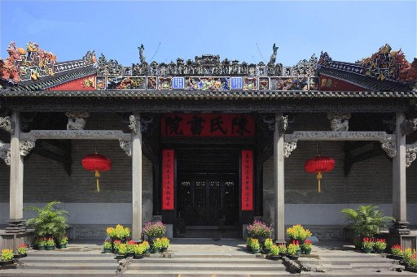
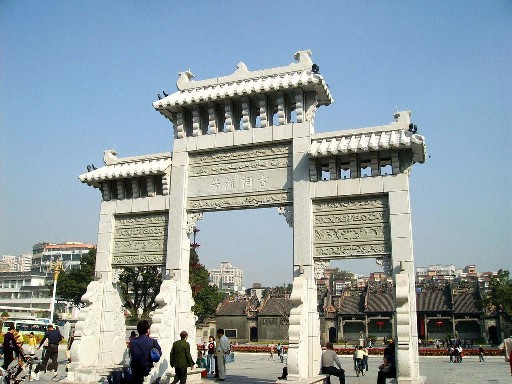

陈家祠堂坐落于广东省广州市中山七路。陈家祠堂又称“陈氏书院”，始建于清光绪十四年（1888年），光绪二十年（1894年）落成，它是由清末广东省七十二县的陈姓联合建造的，是广东省著名的宗祠建筑。陈家祠堂的建筑结构可分为三轴、三进，建筑面积达8000平方米。

1988年中华人民共和国国务院公布为全国重点文物保护单位。陈家祠始建于清光绪十四年(1888)，建成于光绪二十年(1894)，占地面积1.5万平方米。主体建筑为五座三进、九堂六院，建筑面积6400平方米。以大门、聚贤堂和后座为中轴线，通过青云巷、廊、庑、庭院，由大小19座建筑组成建筑群体，各个单体建筑之间既独立又互相联系。
交通
1、开放时间：8：30～17：30
2、地址：中山七路恩龙里34号。
3、交通：乘地铁陈家祠站D出入口；乘85、88、104、107、128、路公交车高基站下，乘268、250路公交车陈家祠站下；乘15、52、55、105、124、133、193、196、205、207、231、232、256、275、530、539、555路公交车中山八路站下。
4、门票：10元，65岁以上持老人优惠证免票，中学生及大学生（全日制本科）半票5元，退休人员凭证半票。注：【以前只要姓陈的，就可以免费进入，现在不行】
2、地址：中山七路恩龙里34号。
3、交通：乘地铁陈家祠站D出入口；乘85、88、104、107、128、路公交车高基站下，乘268、250路公交车陈家祠站下；乘15、52、55、105、124、133、193、196、205、207、231、232、256、275、530、539、555路公交车中山八路站下。
4、门票：10元，65岁以上持老人优惠证免票，中学生及大学生（全日制本科）半票5元，退休人员凭证半票。注：【以前只要姓陈的，就可以免费进入，现在不行】